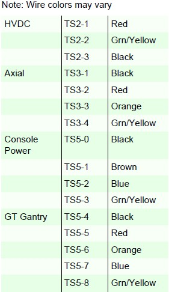
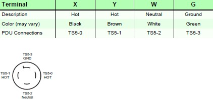
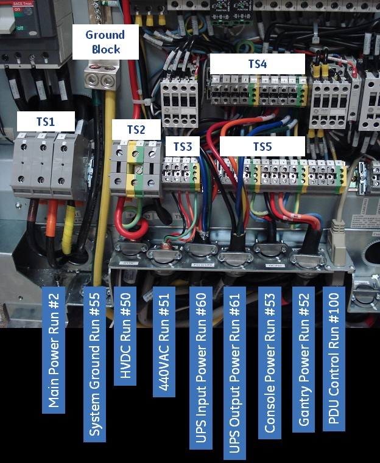

Operating Documentation
Direction 5193574-800, Rev# 22
LightSpeed 7.X Service Methods
Module Version 1.0, Version Date 4/22/10
Operating Documentation |
| Labor: | 1 person; 1 man-hour |
| Tools: | Standard Install Tool Kit |
| ||||
| Do not work in an energized PDU. When working on the PDU, follow this simple rule: Always tag and lock out power to the PDU at the main disconnect. Failure to due so can result in electrocution or death. Do not apply power to the PDU until all work has been completed and all PDU covers are in their proper place. |
1. Verify power is tagged and locked out at the main disconnect panel. Verify electrician has completed power connections to the TS1 panel. |  |
2. Place the circuit breakers in the off/down position during installation. | |
3. Connect the HVDC cable (Run #50) to TS2. | |
4. Connect the 440VAC cable (Run #51) to TS3. | |
5. Connect the console power cable (Run #53) to TS5-0 through TS5-3. Carefully remove the power plug from the console end. Verify the plug connections match the PDU connections by comparing colors. |  |
6. Connect the gantry power cable (Run #52) to TS5-4 through TS5-8. |  |
7. Connect the PDU control cable (Run #100) to J1 on the A panel. | |
8. Connect the ground cable (Run #55) from the table/gantry raceway ground bus to the PDU ground block. | |
9. For installations with a UPS option: Remove all three terminal jumpers from TS4. Connect the UPS input power cable (Run #60, P/N 5125079) to TS4-1 through TS4-5. Connect the UPS output power cable (Run #61, P/N 5125079-2) to TS4-6 through TS4-10. |